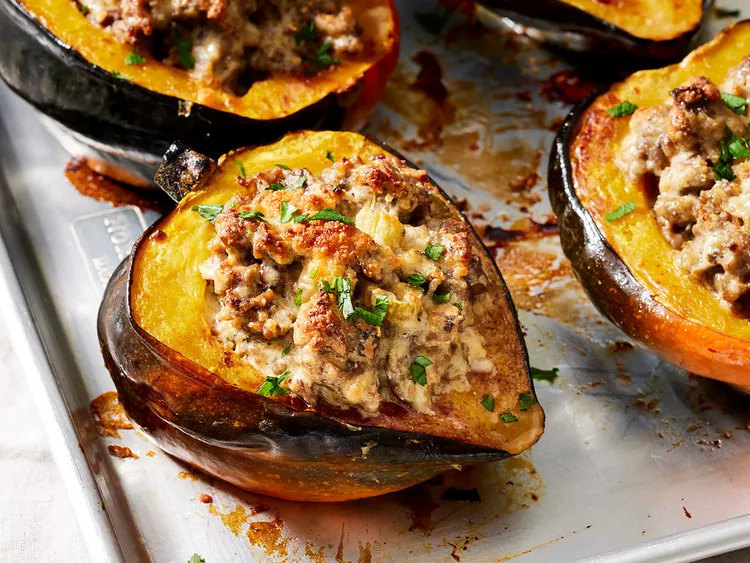

Stuffed Acorn Squash with Sausage

Description
Stuffed acorn squash with a cheesy sausage and mushroom filling. It was a favorite side dish in my family when I was growing up. Now, it's one of my husband's favorite dishes. It's a great way to use up that abundant, reasonably priced, tasty fall squash.
Ingredients
- 2 acorn squash, halved and seeded
- 1 pound ground sausage
- 1 cup chopped celery
- ½ cup chopped mushrooms
- ¼ cup chopped onion
- 1 large egg, beaten
- ½ cup sour cream
- ½ cup grated Parmesan cheese
Steps
- Gather all ingredients. Preheat the oven to 375 degrees F (190 degrees C). Line a baking sheet with aluminum foil.
- Place squash halves, cut-side down, onto the prepared baking sheet. Bake in the preheated oven until tender, about 1 hour. Remove from the oven, turn squash halves over, and set aside to cool. Leave the oven on.
- Heat a large skillet over medium-high heat. Add sausage; cook and stir until browned and crumbly, 5 to 7 minutes; drain and discard grease. Add celery, mushrooms, and onion; cook and stir until celery is softened, 5 to 10 minutes. Remove from the heat.
- Beat egg in a large bowl; stir in sour cream and Parmesan cheese. Stir cheese mixture into sausage mixture, then spoon into squash halves.
- Return to the oven and bake until filling is cooked through, about 20 minutes.
Home